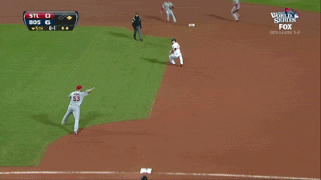

RUI
REA group's
User Interface library
Our problems!
Adventurous Designers!
Designers/UX would create detailed cut ups with pixel perfect guides that were different for each project!
With a UI Library we could challenge decisions and empower designers to make holistic changes to all applications
Changing Direction
As a company we love being Agile, however our UI was not!
With a UI Library we are in a much better place to make sweeping changes, faster then before!
Resolving problems!

Our developers would constantly be re-inventing the wheel across different teams.
With a UI Library we have a documented website that showcases our components for all our developers to use.
History of RUI
- Started in r-search/Destination Search our large monolithic applications that do "all the things"!
- The RUI UI Library node application
- RUI 2.0 Featuring Bower
Where are we now?
How does it work?
RUI Core
RUI Auto-complete
RUI Callouts
RUI Forms
UMD format
(function (root, factory) {
if (typeof define === 'function' && define.amd) {
// AMD. Register as an anonymous module.
define(['b'], factory);
} else {
// Browser globals
root.amdWeb = factory(root.b);
}
}(this, function (b) {
//use b in some fashion.
// Just return a value to define the module export.
// This example returns an object, but the module
// can return a function as the exported value.
return {};
}));

Major Challenges
- Implementation in large legacy monolithic systems.
- Fighting the want for overrides.
- Over engineering the world.
- Working with different frameworks.
The Future
- Setup documentation more as a digital style guide.
- Web components.
- Isomorphic modules, to make updates even easier!